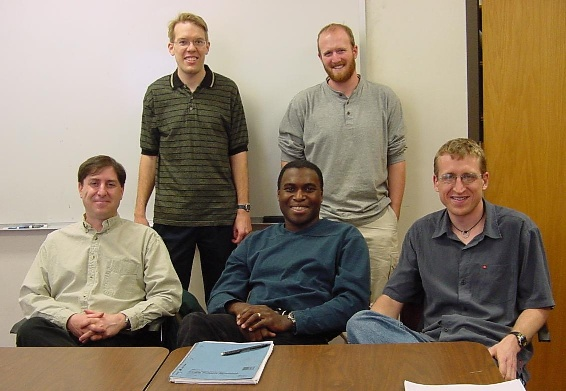

CU Research Group: Stratified, Rotating Fluid Flow
Mark Petersen, Neil Burrell
Jeff Weiss, Keith Julien, Michael Sprague
Collaborators
-
Keith Julien
University of Colorado, Boulder
Department of Applied Mathematics
Research Interests:
Dr. Julien's primary area of research are in the dynamics and instability processes in geophysical
and astrophysical fluid dynamics. These include turbulent fluid convection and the effects of stratification, rotation and magnetic fields which are all ubiquitous features of geophysical and astrophysical fluid objects. Particular emphasis has been placed on the characteristics of coherent structures, their transport and organization of large-scale flows, and mean-flow generation. Integral parts of Julien's research include high perfomrance computer simulations, dynamical systems thory and techniques in applied mathematics.
-
Jeff Weiss
University of Colorado, Boulder
Program in Atmospheric and Oceanic Sciences
Research Interests:
Dr. Weiss' research is focused on theoretical problems in geophysical fluid dynamics, with particular emphasis on nonlinear phenomena and the role of coherent structures.
-
Glen Stewart
University of Colorado, Boulder,
Laboratory for Atmospheric and Space Physics
Research Interests:
Origin and evolution of the solar system, with an emphasis on modeling the solid-body accretion of the terrestrial planets and the solid cores of the giant planets. Accretion of the Moon after a giant impact on the Earth. Modeling of satellite wakes and spiral density waves in planetary rings. Nonlinear dynamics of the three-body problem as applied to problems in solar system dynamics.
-
Neil Burrell
University of Colorado, Boulder
Department of Applied Mathematics
Research Interests: Hamiltonian systems; Quasi-geostrophic dynamics; vortex merger and alignment in three dimensions.
-
Michael A. Sprague
University of Colorado, Boulder
Department of Applied Mathematics
Research Interests: Numerical simulation of geophysical flows. Michael is using a parallel Chebyshev- Petrov-Galerkin program to solve a reduced set of non-hydrostatic quasi-geostrophic equations for rapidly rotating convection, which is applicable to ocean deep convection. As a Ph.D. student in Mechanical Engineering, Michael developed a coupled spectral-element/finite-element program for near-free-surface ship-shock simulation that incorporates nonlinear cavitation effects and field separation.
|
|